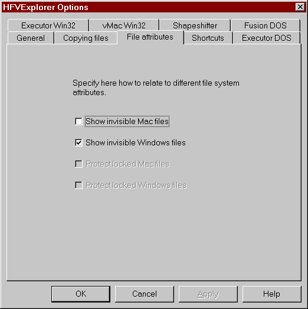

Show invisible Mac files:
If checked, all Mac files (except Catalog file and Extents overflow file) are shown; otherwise files marked as "invisible" are not shown. Most of the time, you don't need to see the invisible files, since they are usually just desktop files and folder custom icons.
Show invisible Windows files:If checked, all Windows files are show; otherwise, files with "hidden" attribute are not shown.
Protect locked Mac files
Protect locked Windows files:These options are not yet implemented. On the other hand, "name locked" Mac files are protected.